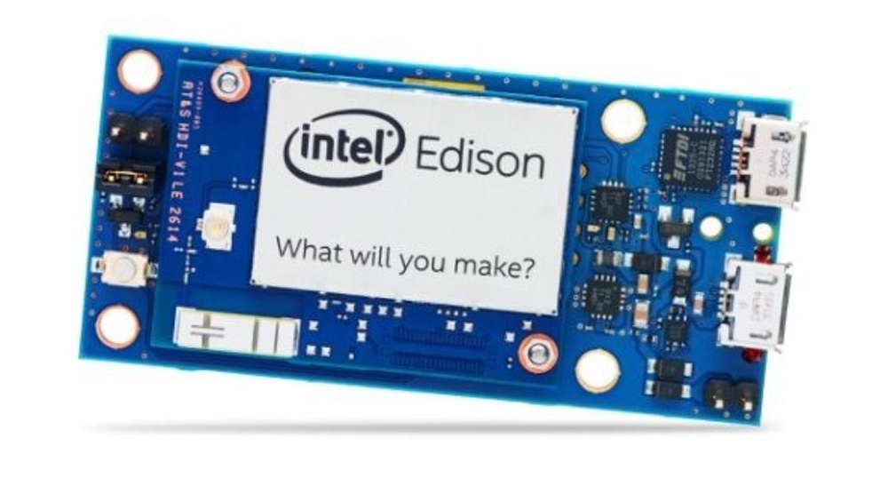

Node.js daemon na Intel Edison utilizando Systemctl
Node.js daemon na Intel Edison utilizando Systemctl

Vamos ver como manter um serviço Node.js rodando sempre que a Intel Edsion ligar.
O que é o Systemctl
Neste tutorial nós vamos usar o systemctl que é um manager de sistemas e serviços do Linux.
O que temos que fazer
Primeiro vamos criar um arquivo .service dentro da pasta /lib/systemd/system/.
$ touch /lib/systemd/system/{nome-do-seu-servico}.service
Lembre-se de trocar a variavel {nome-do-seu-servico} antes de criar o arquivo.
Agora vamos editar nosso arquivo .service e inserir o seguinte conteúdo.
[Unit]
Description=Descrição do seu serviço
After=mdns.service
[Service]
ExecStart=/bin/su root -c 'node /home/root/{pasta-do-seu-servico}/index.js'
Restart=always
RestartSec=10s
Install]
WantedBy=default.target
Description - Descrição do service
Restart - Deve ser always para iniciar o serviço sempre que inicar a Intel Edison
ExecStart - Comando que deve ser executado quando inicar, no nosso caso rodar um arquivo Node.js
Pronto agora ao reiniciar a Intel Edison seu serviço vai iniciar automaticamente.
Comandos systemctl
Se você pricsar parar o serviço por algum motivo utilize o comando:
$ systemctl stop {nome-do-seu-servico}
Para iniciar o serviço utilize o comando:
$ systemctl start {nome-do-seu-servico}
Para reiniciar o serviço utilize o comando:
$ systemctl restart {nome-do-seu-servico}
Para verificar o status do serviço utilize o comando:
$ systemctl status {nome-do-seu-servico}